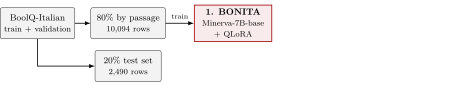
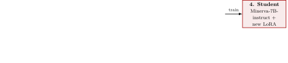
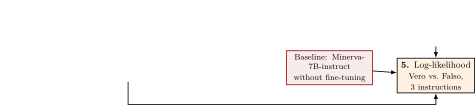
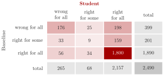

BONITA: Generating Italian Instruction-Tuning Data for Boolean Question Answering 3-cfu Project Work in Natural Language Processing
Francesco Baiocchi, Leonardo Petrilli Supervisor: Prof. Paolo Torroni Master’s Degree in Artificial Intelligence, University of Bologna Fall 2026
What we wanted to know
Does this work for Italian? We built BONITA, a generator that reads an Italian paragraph and writes a yes/no question about it with its answer, Vero or Falso.
Does training only on BONITA’s questions make the model better on a test set of human-labeled Italian questions?
We train BONITA, use it to generate questions from Wikipedia, fine-tune a student on these questions only, and compare it with the original model.



Vero or FalsoPrompt:
<|tasktype|>
boolean question answering
<|context|>
{passage}
<|task|>
Completion:
{instruction} {question} Vero o Falso?
<|pipe|>
Risposta: Vero/Falso<|pipe|> and the answer. As in Bonito, the loss is computed on the completion onlyA Wikipedia paragraph, never labeled by anyone
“Glux-en-Glenne si trova sul massiccio del Morvan ed è il comune più alto del dipartimento con il Monte Préneley culminante a 855 m s.l.m., sulle cui falde vi sono le sorgenti che danno origine al fiume Yonne.”
The task BONITA generates from it
“In base al testo precedente, rispondi alla domanda: La sorgente del fiume Yonne si trova nel Morvan? Vero o Falso?” → Vero
The answer is in the paragraph alone: Glux-en-Glenne is on the Morvan, and the sources of the Yonne are on the slopes of its Monte Préneley.
BONITA almost always writes a well-formed task: of 10,000 generations, only 4 are malformed and 32 repeat a question already kept, so 9,964 (99.6%) are kept.
Prompt:
{passage}
{instruction} {question} Vero o Falso?
Risposta:
Scored continuations:
Vero log P( Vero | prompt)
Falso log P( Falso | prompt)Vero and Falso: the more likely one is its answer, so no free-text answer has to be parsedVero, so a model that always answers Vero already reaches 61.0 accuracy| Model | Instr. | Accuracy | Macro-F1 |
|---|---|---|---|
Always Vero
|
– | 61.0 | 37.9 |
| Baseline | 0 | 79.7 | 79.4 |
| 1 | 81.1 | 80.9 | |
| 2 | 79.6 | 79.4 | |
| mean | 80.1 | 79.9 | |
| Student | 0 | 88.2 | 87.6 |
| 1 | 87.7 | 87.3 | |
| 2 | 88.2 | 87.7 | |
| mean | 88.0 | 87.5 |
Vero: the gain comes on top of instruction tuning, from fewer than 10,000 synthetic examplesVero questions, and not just a bias| Model | Instr. |
Pred. Vero
|
Recall Vero
|
Recall Falso
|
|---|---|---|---|---|
| Baseline | 0 | 50.8 | 75.0 | 87.0 |
| 1 | 50.8 | 76.2 | 88.8 | |
| 2 | 48.0 | 72.7 | 90.4 | |
| mean | 49.9 | 74.6 | 88.8 | |
| Student | 0 | 59.2 | 88.9 | 87.0 |
| 1 | 57.9 | 87.4 | 88.2 | |
| 2 | 58.5 | 88.3 | 88.0 | |
| mean | 58.6 | 88.2 | 87.7 |
Vero questions: the baseline misses a quarter of them, with a recall of 74.6, while the student finds 88.2%; on Falso the student stays almost as good, 87.7 against 88.8Vero more often? Only partly: even with the decision threshold tuned on the test set, an optimistic upper bound, it reaches 82.4, about 2 of the 8 points of the student
Some errors come from the test set, not from the models
Vero no longer fits the Italian questionVero, while its passage says that carbon is a non-metalVero questions; a threshold shift explains only about 2 of the 8 pointsWhat our experiments do not show
Next steps
A specialized Italian domain, the missing comparisons, more task types, more varied and balanced questions.